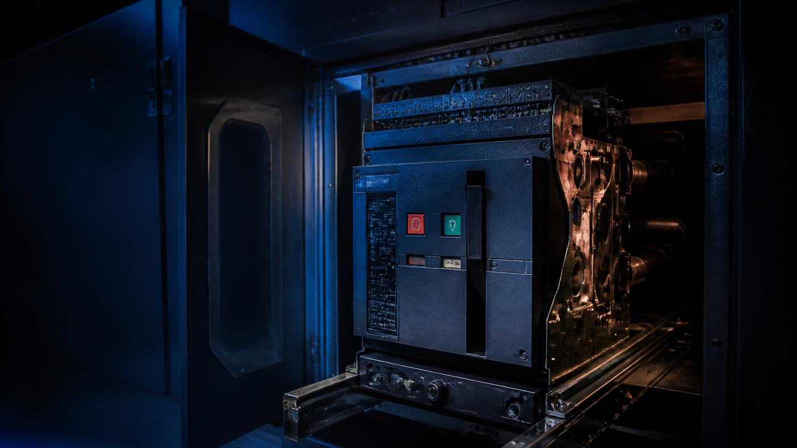

// Critical Power
What a circuit breaker is actually doing
Overload versus short circuit versus ground fault, what every knob on a trip unit changes, and the 80 percent rule people get wrong.

A circuit breaker looks like one device with one job. It is closer to three, because the three faults it answers are not the same problem.
Overload is current above the conductor's rating on a healthy circuit. Nothing is broken; the damage is thermal, over minutes. The response has to be slow and inverse - tolerant of a motor start, not so tolerant that 200 percent of rating sits there for an hour.
Short circuit is a bolted fault limited only by system impedance: tens of thousands of amps in the first half cycle, damage by magnetic force and arc energy, cycles rather than minutes.
Ground fault is current leaving through grounding conductors, conduit or building steel. The dangerous case is arcing - a few hundred amps, below instantaneous pickup and far below long-time pickup on a big feeder. Phase overcurrent logic never sees it, so ground fault sensing watches the residual sum of the phases instead.
One response cannot cover all three, which is the architecture of a trip unit.
What actually opens the contacts
Thermal-magnetic breakers put two mechanisms in one case. Overload is handled by a bimetallic strip - two metals with different expansion rates bonded together, heated by load current, deflecting until it releases the trip latch. It is a thermal analogue of conductor heating, so it gives an inverse curve for free. Short circuit is handled by a magnetic armature, steel pulled by the field around the current path, tripping the latch with no thermal lag. Cheap and robust, but the bimetal responds to ambient as well as load, and nothing is adjustable except, on larger frames, instantaneous pickup.
Purely magnetic breakers, sold as hydraulic-magnetic, replace the bimetal with a solenoid pulling a spring-loaded core through silicone damping fluid: the inverse delay comes from the fluid rather than from heat, so the trip point does not drift with ambient. Hence DC plants and hot enclosures.
Electronic trip units use current transformers or Rogowski coils, a microprocessor and an actuator, and every protection function becomes a number you can set. That is the point: coordination is an argument about which device opens first, and you cannot win it with two fixed curves.
Three families of breaker
| Molded case | Insulated case | LV power breaker | |
|---|---|---|---|
| Standard | UL 489 | UL 489; none of its own | UL 1066, ANSI C37.13/.16/.50 |
| Frames, 480 V interrupting | 100–3000 A, 10–100 kA | 400–5000 A, 35–150 kA | 800–5000 A, 30–100 kA |
| Short-delay time | ~18 cycles | 30 cycles | 30 cycles |
| Instantaneous | always, fixed override | always, higher override | can be supplied with none |
| Serviceable | no | no | yes |
| Mounting | fixed or plug-in | fixed or drawout | normally drawout |
| Continuous | 80% unless listed 100% | 80% unless listed 100% | 100% as standard |
Ranges are from Roybal's IEEE survey; catalogs run higher now. No standard defines ICCB at all, so those ratings vary by manufacturer. The row that matters is instantaneous. Coordinating in the fault region needs an upstream device that will deliberately wait, waiting needs short-time withstand, and UL 1066 and ANSI C37.50 prove it: rated short-time current for 30 cycles, a 15-second pause, then 30 cycles again. Molded case breakers are not tested for that, which is why the drawout power breaker exists.
The trip curve, knob by knob
Trip units are named for the functions they carry, which is where LSIG comes from: long-time, short-time, instantaneous, ground fault. The curve is log-log, current across and clearing time up. In is the sensor rating; Ir, long-time pickup, is a fraction of In. Short-time and ground settings are multiples of Ir, so moving pickup drags the whole curve sideways.
Long-time pickup is where the curve's left edge sits, and it should track conductor ampacity. Turn it down and the overload region slides left. It is not a precise threshold: a typical unit trips between 1.05 and 1.20 times Ir, which is what the plotted band shows.
Long-time delay sets how long an overload is tolerated, given as a time at a reference multiple of pickup, commonly 6 × Ir because that is roughly a motor's starting current. Turn it up and the whole inverse region lifts vertically; pickup does not move.
Short-time pickup is where the curve steps in from the long inverse slope to a much shorter delay, set as a multiple of Ir over a range like 1.5 to 10. Move it right and the step moves right. Short-time delay is how long the breaker holds that current; move it up and the shelf rises. This is the setting that buys selectivity, and the same setting raises incident energy.
I²t in or out changes the shape of that shelf. Out, it is definite time - flat, whatever the current. In, it gains an inverse ramp below a fixed current, commonly 8 × Ir, stretching the delay at lower currents. Use it in against a downstream fuse or thermal-magnetic breaker, whose curves slope; out for maximum predictable delay against another trip unit.
Instantaneous is a vertical line with no intentional delay. Many units let you switch it off, which is how an upstream breaker is made to wait, but switching it off does not remove the non-defeatable instantaneous override that molded case and insulated case breakers carry to protect contacts from currents they cannot hold, typically near 10 to 13 times frame rating. It is detected on peak rather than RMS, so an override that looks comfortable against available fault current can still fire on the first half cycle of an asymmetric wave.
Ground fault gets its own pickup and delay, from the residual sum of the phases plus neutral or a separate zero-sequence CT. It is equipment protection, not a GFCI.
Racking a breaker out
Drawout construction is what makes a maintainable plant possible. The breaker rides on rails in its own compartment and moves between four defined positions with the assembly still live:
- Connected - primary and secondary disconnects engaged, carrying load.
- Test - primaries out, control circuits live. Close it, trip it, prove the trip unit and the interlocks with no load current near it.
- Disconnected - everything disengaged, breaker still in the cell.
- Withdrawn - off the rails, on a lift truck.
Only the load fed by that breaker is affected. On a 2N plant this is concurrent maintainability: rack out the A side, work it, rack it back, prove it in test, close it.
Racking drives moving primary contacts against energized bus, and NFPA 70E's task table treats insertion or removal of breakers from cubicles, doors open or closed, as a task where an arc flash is likely. Remote racking - a motorized tool driving the mechanism from a cable, operator outside the arc flash boundary - is the answer. Racking is not low risk because the door is shut.
Eighty percent, one hundred percent, and the arithmetic
NEC Article 100 defines a continuous load as one where the maximum current is expected to continue for three hours or more. IT load is continuous by definition.
The rule reads the same for branch circuits, feeders and service conductors - 210.20(A), 215.3, 230.42(A)(1): the rating of the overcurrent device shall not be less than the noncontinuous load plus 125 percent of the continuous load. Note the direction. The Code sizes the device from the load, and the "80 percent rule" is that arithmetic inverted, because 1 / 1.25 = 0.8. It is a rule of thumb, not code language.
Eighty percent is also not a rating. UL 489 requires every molded case breaker to carry 100 percent of rating continuously, tested in open air in a chamber held at 40 °C. Put it in a can and the heat has nowhere to go.
A 100 percent rated breaker has passed further UL 489 testing inside an enclosure of specified minimum size, run to temperature stabilization without tripping, with limits on terminal temperature rise. The listing comes with conditions, printed on the breaker: a minimum cubicle volume, ventilation openings where they are needed, and - where terminal temperature ran between 50 °C and 60 °C in test - 90 °C insulated wire sized at the 75 °C ampacity. The exception is also written on the assembly, so a 100 percent rated breaker in a panelboard not listed for 100 percent operation does not earn it.
Noncontinuous 150 A, continuous 600 A
Standard: 150 + (1.25 x 600) = 900 A -> 1000 A frame, 3 x 350 kcmil/phase
100% rated: 150 + 600 = 750 A -> 800 A frame, 3 x 250 kcmil/phase
208 V 1-phase 20 A branch, continuous
20 / 1.25 = 16 A -> 16 x 208 = 3,328 VA usable (not 4,160)The rack arithmetic is where people fumble: planning capacity on the full handle rating, when a 20 A circuit is a 16 A circuit for IT load, or applying 80 percent twice because the PDU vendor already published 16 A for that 20 A strip.
The ratings you cannot fudge
Everything above is whether the breaker trips correctly. Interrupting rating is whether it survives doing so. NEC 110.9 requires equipment intended to interrupt fault current to have an interrupting rating at nominal circuit voltage not less than the current available at its line terminals. It is voltage-specific: the same frame carries different ratings at 240, 480 and 600 V, and the catalog headline is usually the 240 V one. 110.10 adds that devices, impedances and equipment short-circuit current ratings all have to be coordinated so a fault clears without extensive damage.
Series ratings let a lower-rated downstream breaker sit where available fault current exceeds its own interrupting rating, because a UL-tested combination with a fully rated upstream device shares the interruption. Only tested combinations count, and NEC 110.22 requires the combination field-marked on the equipment. 240.86(C) rules them out where motors sit between the two devices and their full-load currents exceed 1 percent of the lower device's interrupting rating - for 14 kA branch breakers, 140 A. They are also the opposite of coordination: under high fault conditions both devices may open.
Current-limiting devices reduce fault current to substantially less than what would flow if the device were replaced by a solid conductor of comparable impedance. UL 489 requires a current-limiting breaker to hold let-through I²t below that of a half-cycle wave of the available symmetrical current, and to be marked "Current Limiting" with its peak and I²t values. Fuses do it by clearing inside the first half cycle. Both let you protect equipment whose SCCR you cannot raise.
Read the whole label rather than the handle: interrupting rating at your voltage, continuous rating conditions, enclosure dimensions, wire temperature. Record the as-set trip values inside the cubicle door with a date, because trip units get swapped and settings default. Then confirm the instantaneous override in peak amps against the real X/R - that number decides whether the short-time delay in your study exists in the field or only on paper.